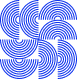
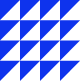

— À propos
Design
multimedia
intégration
- EXP 20+
Designer multidisciplinaire, intégratrice web et conceptrice numérique, j'allie créativité, stratégie et fonctionnalité pour donner vie à des expériences claires, cohérentes et engageantes. Mes collaborations dans les secteurs du sport, de la santé et du corporatif m'ont permis de développer une approche solide, centrée sur l'utilisateur et les objectifs d'affaires.
Polyvalente et à l'écoute, je transforme des enjeux complexes en expériences visuelles cohérentes et engageantes, tout en respectant l'identité de l'organisation, les budgets et les échéanciers. Flexible, attentive et respectueuse, je m'intègre aisément aux équipes et aux environnements de travail.
— Stratégie UX
Comprendre les objectifs, les utilisateurs et les défis grâce à la recherche et à la discussion afin de définir une orientation claire dès le départ.
- ux+ui design
Peaufinage des détails, tests d'ergonomie et vérification de la cohérence, de l'efficacité et de la préparation au lancement de l'ensemble.

- [prototypage UX-UI]
Transformer des idées en interfaces intuitives, en visuels percutants et en expériences numériques fonctionnelles grâce à la conception et au développement.

- [integration]
HTML/CSS & JS libraries. Expert-level No-code delivery via SiteCore and WordPress.
J'ai eu la chance de collaborer avec